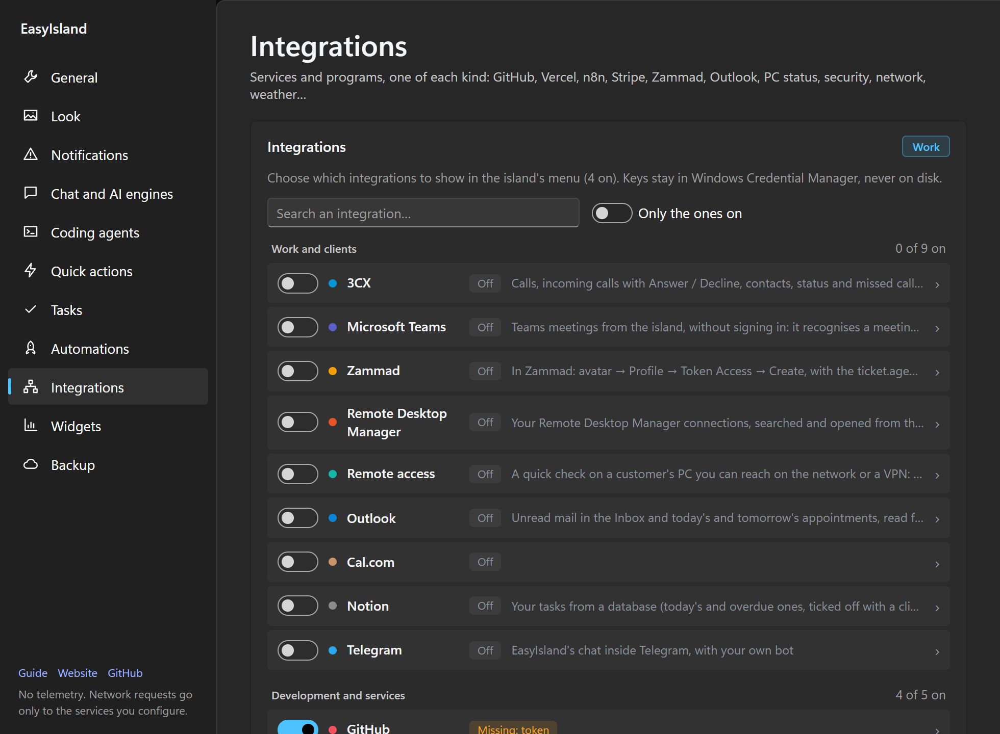
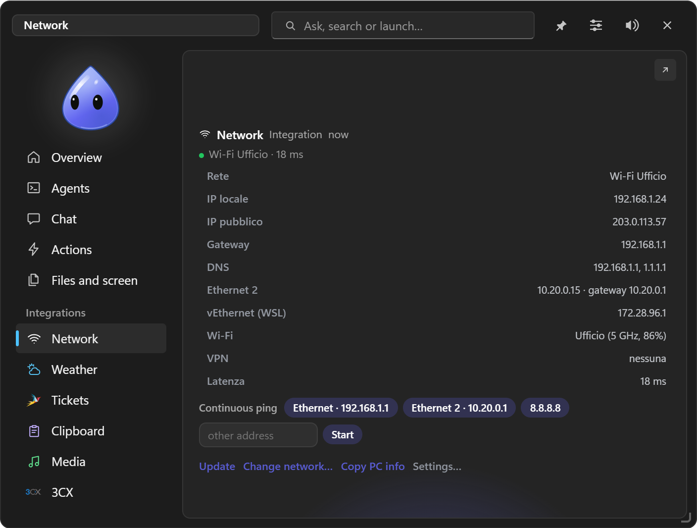
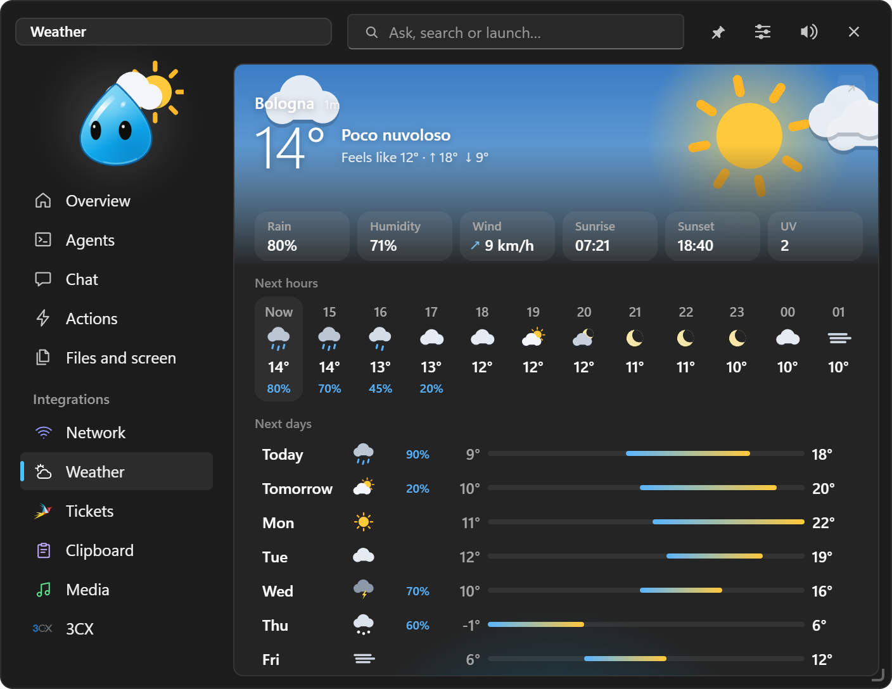
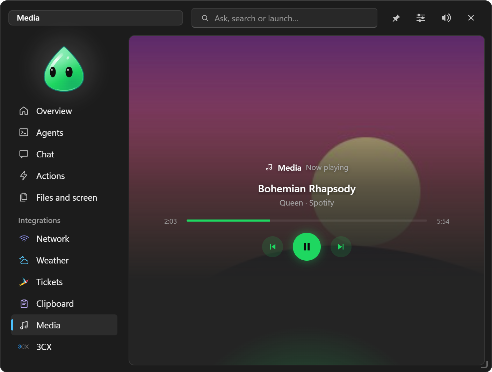

Connecting services
Integrations
Every integration, what it shows and what it needs to connect.
Settings → Integrations turns them on, one per kind. They appear in the island's menu and in the Overview tiles. Keys, tokens and addresses live in the Windows Credential Manager.

#Managing them
- They're split into groups (Work and clients, Development and services, This PC), with a search and Active only.
- Each row: switch, colour, name and state (Off, Active, or Missing: key when a credential is needed). A click opens the explanation, fields, options, icon and colour.
- In the menu each integration shows its logo or an emoji, and a colour the character wears when its tab is open.
- Reorder them by dragging in the menu or the Overview; Lock moving and Reset order at the bottom.
- Which ones are on depends on the profile.
- When a check goes from OK to a problem, the entry gets a dot, the character makes a sound and the island shows up (following the profile's notifications). Checks become three times rarer on battery and stop when paused.
#Work and clients
| Integration | What it does | Needs |
|---|---|---|
| 3CX | Phone on the PC, calls, contacts, team, chat, voicemail | 3CX V20 phone system |
| Zammad | Tickets assigned to you, unassigned and escalated; alert on a new ticket to assign | Address and token (ticket.agent permission) |
| Outlook | Unread mail, today's and tomorrow's appointments, alert before a meeting | Classic Outlook open, or the Microsoft account |
| Teams | Meeting controls, Join from the copied link, presence | Teams |
| Notion | Tasks with views, notes, pages, mini Notion in the island, alerts | An internal integration's token |
| Telegram | The chat in your bot, tasks, permissions, files | A bot created with @BotFather |
| Remote access | Temporary WinRM or SSH connection to a client's PC | Address, user, password (in memory only) |
| Remote Desktop Manager | Finds and opens RDM connections | RDM installed |
| Cal.com | Bookings | API key |
#Development and services
| Integration | What it does | Needs |
|---|---|---|
| GitHub | Repository activity, pull requests | Token |
| Vercel | Deployments | Token |
| Stripe | Payments | Read-only key |
| Resend | Sent emails | API key |
| n8n | Workflow executions, errors | Address and API key |
| Claude usage | Plan limits (5 hours, week, Opus) and Claude Code tokens | Claude Code signed in |
#This PC
| Integration | What it shows |
|---|---|
| PC status | System disk space (orange under 10 %, red under 5 %), memory, battery, uptime, restart required. Copy PC info: name, user, Windows, model, serial number, IP and MAC ready for a ticket |
| Security | Antivirus, signature age, last scan, firewall, threats found |
| Network | Wi-Fi or cable, local and public IP, gateway, DNS, every adapter, VPNs, latency; alert if the internet doesn't answer. Continuous ping to the gateway or an address. Change network…: DHCP or manual IP and DNS per adapter (with Windows' administrator confirmation) |
| Weather | The current sky animated, humidity, wind, sunrise and sunset, 12 hours and 7 days, rain alert. Open-Meteo, free and keyless |
| Clipboard | History of texts and images, in memory only (see Files and screen) |
| Media | What's playing in any app (Spotify, browser…), with cover and controls |



#Your own integrations
Besides these, you can create your own in plain words in the chat: forms, dashboards, links to your services' APIs. See Custom integrations. For repeated checks (a site per client, a server per office) there are Widgets.